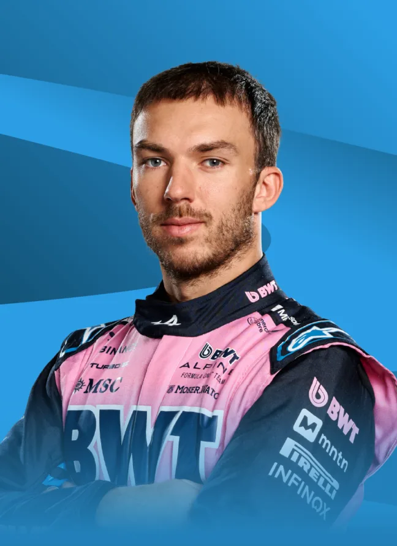
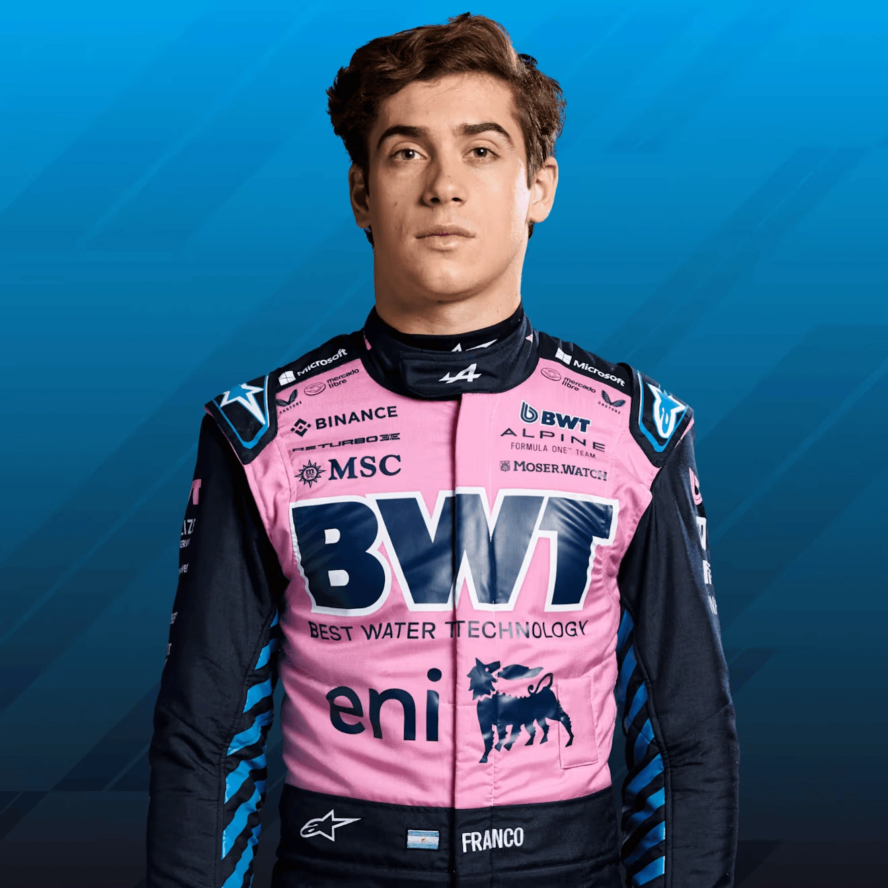

Pierre Gasly has had one of the most dramatic careers in recent Formula 1 history. The Frenchman was promoted to Red Bull in 2019, struggled under enormous pressure, was demoted back to Toro Rosso mid season, and then won the Italian Grand Prix at Monza in 2020 in one of the most emotional victories in recent years. He moved to Alpine in 2023 and has been their most consistent performer, providing leadership and experience as the team rebuilds. Now entering his fourth season with the team, Gasly is the experienced head around which Alpine's 2026 project is being built.

Franco Colapinto
Franco Colapinto is one of the most exciting young drivers on the current Formula 1 grid. The Argentine burst onto the scene in 2024 when Williams gave him his debut mid season and he delivered immediately — qualifying strongly, racing fearlessly, and capturing the hearts of fans across South America in the process. After a brief stint as Alpine's reserve driver, he secured a full time seat for 2026 alongside Gasly. Quick, entertaining, and with a fanbase that generates extraordinary atmosphere at every race, Colapinto is exactly the kind of personality Formula 1 thrives on.

Driver History
The Enstone factory has launched the careers of some of the sport's greatest names. Ayrton Senna made his Formula 1 debut here in 1984 with the Toleman team. Michael Schumacher won his first two championships with Benetton in 1994 and 1995. Fernando Alonso became the youngest World Champion in history with Renault in 2005 at just 24 years old, then backed it up the following year. Kimi Raikkonen drove for the Lotus version of the team. Robert Kubica delivered some spectacular performances. The team has produced and developed more champions and race winners than almost any other on the grid.